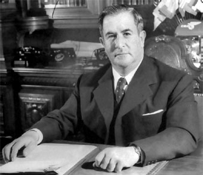

Manuel Ávila Camacho fue un militar y político mexicano que se desempeñó como presidente de México del 1 de diciembre de 1940 al 30 de noviembre de 1946. Inició como militar partícipe en la Revolución mexicana y la Revolución escorbista. Entró en la política dentro de la Secretaría de Guerra y Marina.
En la gestión de Ávila Camacho se canceló la educación socialista, la CNC agrupó al magisterio rural; se creó el Sindicato Nacional de Trabajadores de la Educación (SNTE), que agrupó a la totalidad del personal que laboraba dentro del sistema educativo nacional. Así, la educación y la instrucción fortalecieron la economía, al preparar a individuos para el trabajo eficiente y productivo. El gobierno permitió instituciones educativas privadas y con tendencias religiosas, que proliferaban; se incrementó la matrícula así como las instalaciones en todos los niveles educativos.
Se amplió la red de carreteras para conectar ciudades importantes, se construyeron vías férreas en diversos lugares de la República Mexicana, se ampliaron las redes de correo y telégrafos, las transmisiones de radio llegaron a un auditorio más numeroso, se edificaron obras de riego: como presas y canales de riego.
Otro aspecto importante en las relaciones mexicano-estadounidense en tiempos de Ávila Camacho fue un acuerdo comercial, firmado en diciembre de 1942. Mediante el convenio con México, el gobierno de Estados Unidos tendría la venta exclusiva de México de toda la producción exportable de materiales estratégicos para la guerra y de fibras duras; en cambio, Estados Unidos se comprometía a vender a México productos necesarios para su desarrollo industrial.
La firma del acuerdo bilateral de comercio provocó en México reacciones adversas, por la desconfianza hacia el gobierno de Estados Unidos, debido a que siempre trataba de obtener enormes ventajas de su trato comercial con México.
Ávila Camacho emitió un anuncio dirigido a la nación comunicándole que un submarino de las Potencias del Eje habría hundido en el Atlántico el buque de matrícula mexicana Potrero del Llano, y que de no satisfacerse las reclamaciones, a partir del día 22 existirá un estado de guerra entre México y las Potencias del Eje. El 20 de ese mismo mes, otro buque–tanque llamado Faja de Oro también es torpedeado y hundido.10 Italia y Japón no respondieron a la protesta, y la cancillería alemana se rehusó a recibirla. México entró así a la Segunda Guerra Mundial. El gobierno mexicano envió al Escuadrón 201, integrado por 300 hombres, que fue una agrupación de la Fuerza aérea mexicana, que fue enviada a combatir por México como parte de los aliados.